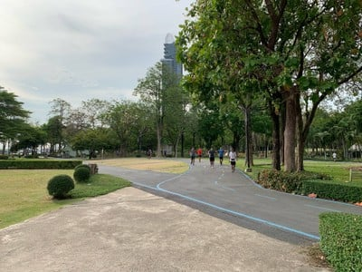
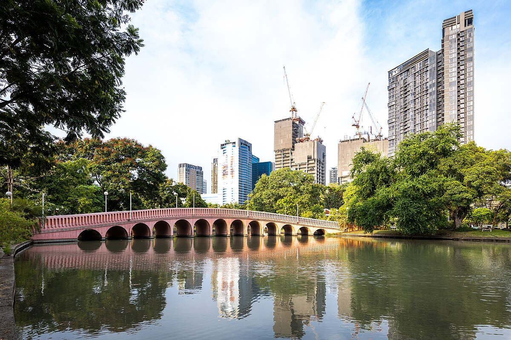

| สวนสาธารณะเฉลิมพระเกียรติ 6 | สวนหลวง ร.9 | สวนจตุจักร |
|  |  |
 |
| สวนสาธารณะแห่งนี้ เกิดขึ้นจากความร่วมมือระ หว่างกระทรวงมหาดไทย การทางพิเศษแห่ง ประเทศไทย และกรุงเทพมหานคร เพื่อเฉลิมพระเกียรติพระบาทสมเด็จพระเจ้าอยู่หัว ในวโรกาสมหามงคลเฉลิมพระชนมพรรษาครบ 6 รอบ 5 ธันวาคม 2542 โดยการทางพิเศษแห่งประเทศไทยมอบที่ดิน และส่วนประกอบอื่น อ่านเพิ่มเติม คลิก... |
เป็นสวนสาธารณะและสวนพฤกษศาสตร์ที่ ใหญ่ที่สุดในกรุงเทพมหานคร มีพื้นที่ประมาณ 500 ไร่ อยู่ในแขวงหนองบอน เขตประเวศ ทางตะวันออกของกรุงเทพมหานคร จัดสร้างเพื่อสร้างเพื่อน้อมเกล้าน้อม กระหม่อมถวายพระบาทสมเด็จพระเจ้าอยู่หัว ในศุภมงคลสมัยเจริญพระชนมพรรษาครบรอบ 60 พรรษา ในวันที่ 5 ธันวาคม พ.ศ. 2530 อ่านเพิ่มเติม คลิก... |
สำหร้บ สวนจตุจักร แห่งนี้เป็นสวนสาธารณะขนาดใหญ่ท ี่ตั้งอยู่ใกล้ตลาดนัดสวนจตุจักร และศูนย์การค้าอื่นๆ โดยรอบ อีกทั้งยังเดินทางสะดวกมาก ไม่ว่าจะเป็นรถเมล์ที่มีขับผ่านหลายสาย , BTS สถานีหมอชิต, MRT สถานีจตุจักร เรียกได้ว่าเดินทางสะดวกมากสำหรับรถสาธารณะ หรือถ้าใครนำรถส่วนตัวมา ฝั่งตรงข้ามก็มีพื้นที่ให้จอดรถจำนวนมาก อ่านเพิ่มเติม คลิก... |
|
ลิ้งคลิป คลิก... |
ลิ้งคลิป คลิก... |
ลิ้งคลิป คลิก... |